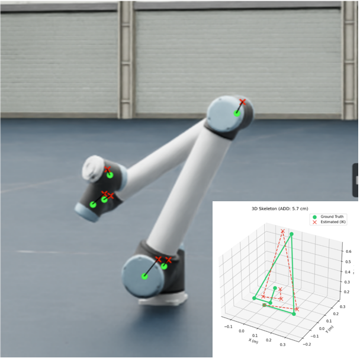
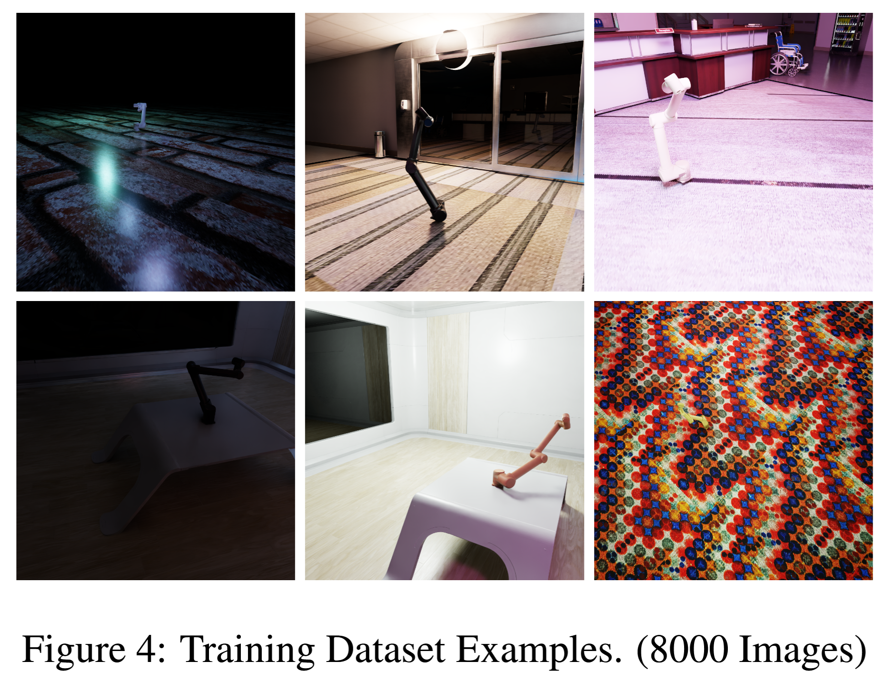
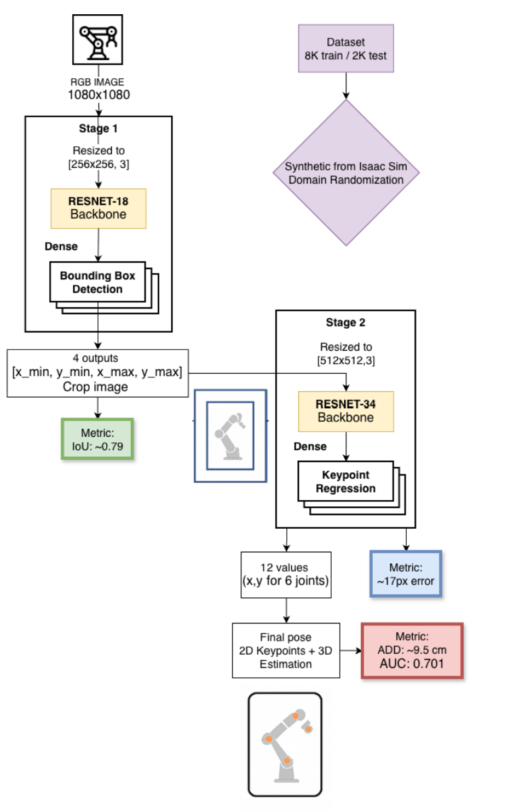
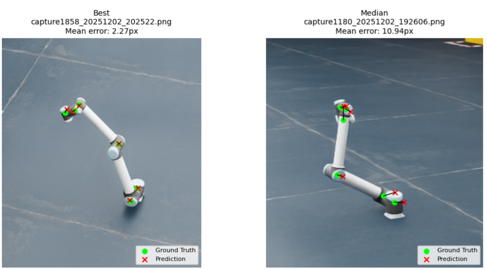
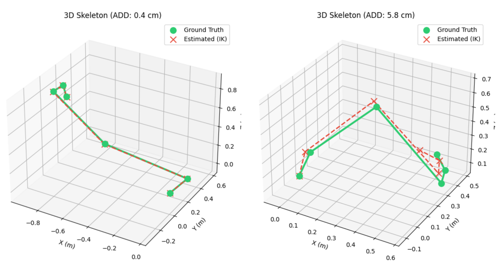
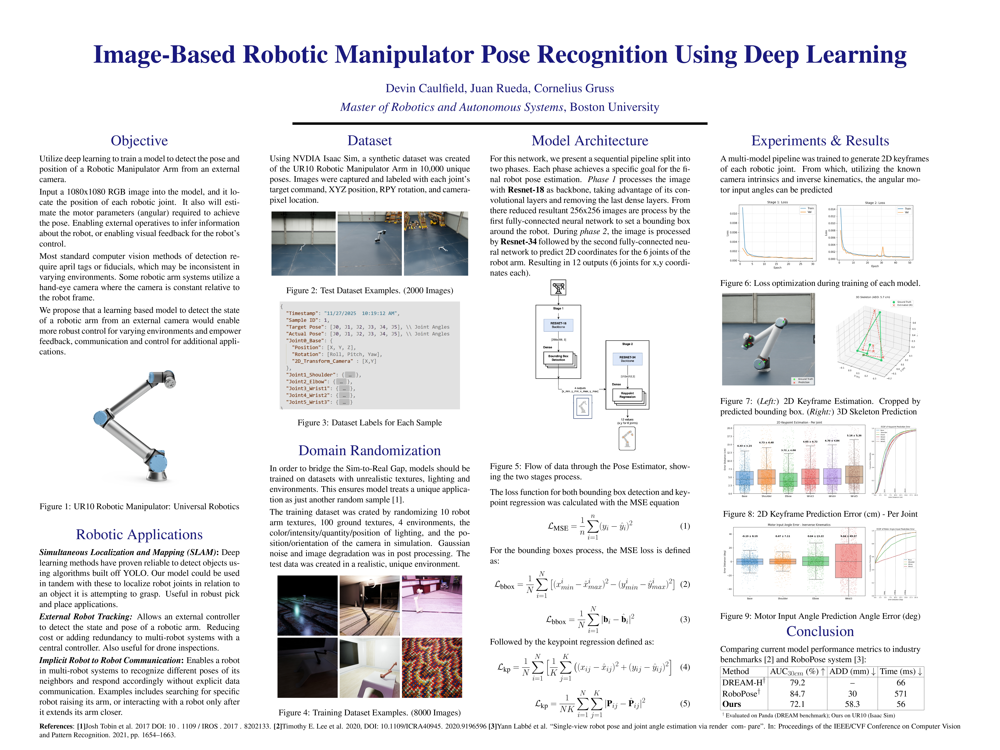

Overview
Utilize deep learning to train a model to detect the pose and position of a Robotic Manipulator Arm from an external camera.
This can enable robots in a multi-robot system to communicate implicitly with each other. Seeing the motion/pose of another robot and react accordingly.
Also useful for Simutaneous Localization and Mapping (SLAM) and robot supervision from external cameras, such as inspection drones.

Simulated Dataset
Simulated 10,000 sythetic image dataset in NVDIA Isaac Sim, by programming a UR10 robotic arm to move to random poses with ROS.
To prevent generalization, randomized camera, lighting, textures, and backgrounds using domain randomization techniques.

Two-Phase Pipeline Architecture
Two Convolutional Nural Networks (CNNs) in a pipeline. First, a model to detect the bounding box of the robotic arm in the image, then crops the image. The next model performs a keypoint regression to detect each joint of the robotic arm.
Both models utilized transfer learning from a Res-Net backbone.




Results & Outcomes
Model was able to predict the position of each robotic joint within a mean error of 6.22cm. 80.2% of predictions were withing 10cm of true performance, which was on consistent with similar models.
This model can perform with a inference speed of 18FPS, which is valid for real-time operation.

